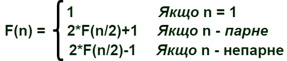

Сформувати декларативне мислення в галузі програмування завдяки використанню чистих функцій, рекурсій замість циклів, запобіганню даних, що змінюються. Опанувати застосування рекурсивних функцій для обчислювальних процесів.
9.1. По колу стоять n людей, яким присвоєні номери від 1 до n. Починаючи відлік з першого і рухаючись по колу, кожна друга людина виходитиме з кола доти, поки не залишиться одна. Нехай номер того, хто залишився, x. Потім по колу стоятиме x людей і процедура виходу з колу людей повторюватиметься доти, поки не залишиться одна людина з номером y. Ці процедури повторюватимуться доти, поки номер тої людини, що залишиться, не стане рівним первинній кількості людей в потоковому раунді. Визначити номер людини, яка залишилася, і кількість повторів процедури. Номер людини f(n), що залишилася, обчислюється за рекурентним співвідношенням:

Визначити глибину рекурсії.
9.2. Увести з клавіатури натуральне число n. Вивести слово YES, якщо число n є точним степенем двійки, або слово NO в іншому випадку. Операцією зведення в степінь користуватися не можна!. Контрольний тест: уведено число 8, отриманий результат: YES.
Онлайн середовище jdoodle та мова функціонального програмування Scheme були обрані через:
1) Мова Scheme, що є діалектом мови LISP, проста і популярна мова функціонального програмування
2) В лекціях функціональне програмування розглядається на прикладах коду Scheme
3) Середовище jdoodle не потрібно встановлювати на комп'ютер.
Завдання №1
(define (test n)
(if ( = n 1)
1
(if ( = ( - ( / n 2) (round( / n 2))) 0)
(- (* 2 (test(/ n 2))) 1)
(+ (* 2 (test(floor(/ n 2)))) 1)
)
)
)
Завдання №2
(define (input)
(string->number (read-line))
)
(define (test1 n)
(if (= n 2)
"Yes"
(if ( = ( - ( / n 2) (round( / n 2))) 0)
(test1( / n 2))
"No")
)
)
(display(test1 (input)))
Скрін-шот №1
Скрін-шот №2
Скрін-шот №3
Скрін-шот №4
Скрін-шот №5
Скрін-шот №6
В результаті виконання даної лабораторної роботи було реалізовано програми на мові schema з використанням рекурсії. Також було сформувати декларативне мислення в галузі програмування завдяки використанню чистих функцій, рекурсій замість циклів, запобіганню даних, що змінюються. Опановано застосування рекурсивних функцій для обчислювальних процесів.